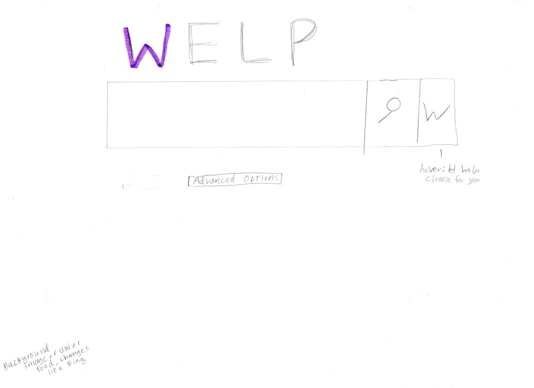
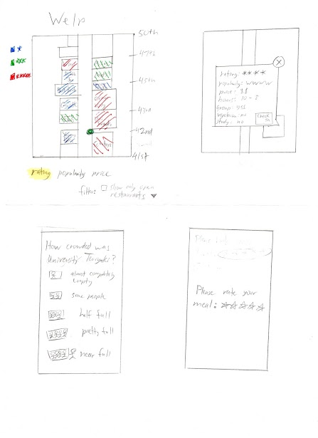
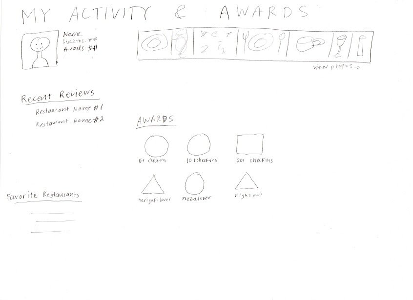
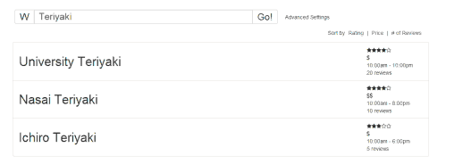
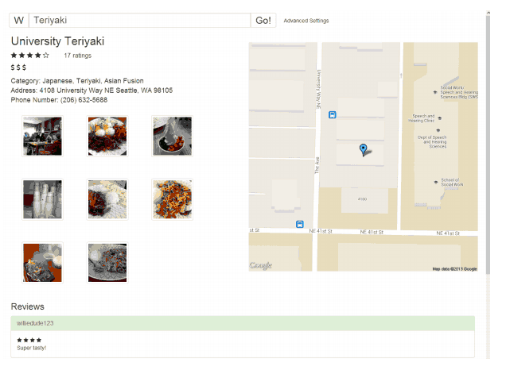
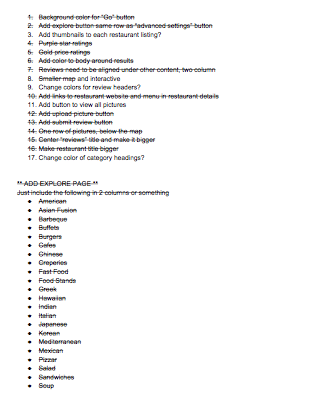
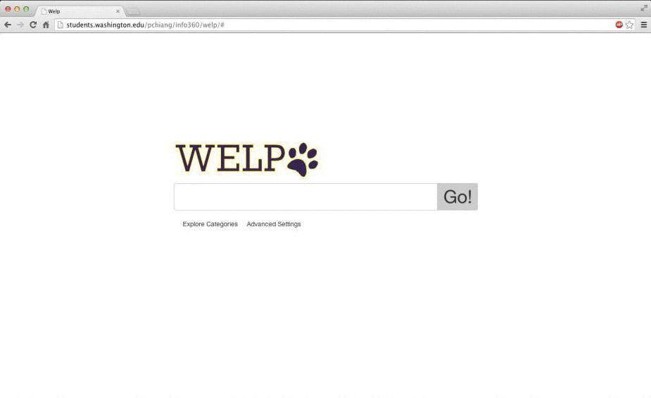

INFO 360 Autumn 2013
This process book documents the design thinking experience and prototyping steps that our team (Team E) took in creating Welp. It includes everything from abstract concepts like our train of thought and rationale to actual sketches and prototypes we made.
Hopefully, this will be an as concise, interesting, and interactive experience as I tried to design it to be.
For defining a problem space, we first asked ourselves what kind of decisions that we or our peers make that while living as college students. We picked food because it was the most relevant and immediate, and it seemed like an easy problem to address, yet we felt it lacked a good solution.
What problems do UW students face?
Living
Classes
Majors
Activities
Finances
Connections
Careers
Food
To delve more deeply into the problem, we first had to get a sense of where people have a problem with their eating habits outside of the school dorm system. So, we conducted an interview with our peers.
Some of our questions:
(Hover over questions for answers.)
Full interview writeupAs we got a better idea of what the problem was all about, we entered the brainstorming phase of the project. At this point, we went for quantity over quality, churning out as many ideas as possible, even ones we weren't sure were possible to engineer.
To help us answer questions like "what would the users want?", we created two personas: Kyle and Jenny. Whenever we need to make a design decision, we used them as representative references to aid our design.
We made three low fidelity paper prototypes: a restaurant searching webapp, a mobile app that tells you how crowded it is, and a rewards program that encourages you to eat at new places.
  We tested our paper prototypes by showing them to our peers and having them attempt to accomplish a pre-defined set of tasks that most users should encounter in normal usage, and then we asked them which of the 3 they liked best. All of our peers that we interviewed thought that our restaurant searching webapp idea was the most promising. This is where I started working on the higher fidelity prototype of the webapp based on our papers.
At the time we were facing a difficult conundrum. I knew it would be impossible for "the engineer" (me) to make a working prototype if our product was of a mobile app. A working prototype was important to me because I thought actually allowing users to have hands on a product would give us much better feedback on how to improve our design. On the other hand, a lot of our peers we interviewed thought that a mobile app would be better than just a website.
We made a webapp... one that is friendly to mobile devices, so friendly that it might as well be a generic mobile app. Welp was born.
Simple Google-like search bar, with autocomplete and advanced settings.
Display list of matching restaurants with multiple sorting options.
Detailed information about each restaurant, such as pictures, maps, and reviews.
Soon after a functional prototype of Welp was rolled out, we did a heuristic evaluation from 10 different perspectives and found multiple violations within each. Some of them (ex: the non-functional back button) were not easy fixes and required redoing the entire structure of the site.
Full heuristic evaluation report
(Hover over perspective for example of violation.)
I fixed most of these problems. Then, taking the advice of our instructor and TA, we sought outside advice and asked people to help us identify even more problems with the prototype. Plenty more were found and we made a list to keep track of them all.
That's okay I wasn't planning on sleeping anyway...
Many design iterations and coffees later...

Over the last quarter, my team worked our hardest to come up with and refine a design that is novel, intuitive, and usable. From our original perspective, "someone should make something to do this", we have more or less switched over to thinking about design from a problem-first point of view. We faced challenges and even had times where things seemed impossible, but we eventually bulldozed through the finish line. Despite our success, it still feels like if we had known what we now know at the beginning of the quarter, we could have done more, better. Or maybe that's just an indication that we learned a lot.
If there's only one thing I can take away from this course: design is hard.
{kind=link}
{kind=link}
{kind=link}
{kind=link}
{kind=link}
{kind=link}
{kind=link}
{kind=link}
{kind=link}
{kind=link}
{kind=link}